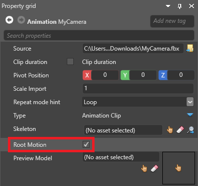
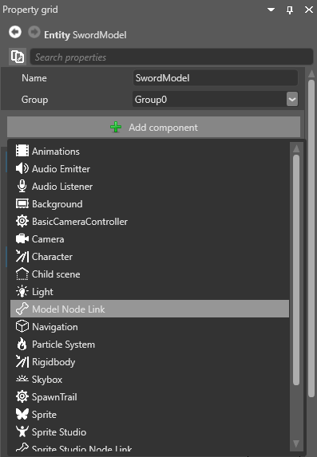
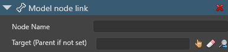

Animate a camera with a model file
Beginner Artist
Like other entities, you can animate cameras using animations imported from 3D model files such as .3ds, .fbx, and .obj.
Note
To animate a camera using a model file, you first need to bake the animation using your modeling tool (eg Maya, 3ds Max or Blender). Stride doesn't support cameras animated using target cameras.
If the camera moves independently, the simplest method is to export the camera animation as a separate file, enable the root motion option on the animation, then add the camera, animation, and animation script to the same entity. If the animations include FOV or near or far plane animations, the Stride camera updates accordingly. With this method, you don't need a model or a skeleton.
If you want the camera to move in tandem with another animation — for example, if the camera is held by a cameraman character with its own model, skeleton and animation — use a model node link component to link the camera entity to the cameraman's movements.
Animate a camera independently
To do this, you need the following assets in your project:
- a camera entity, the camera to be animated
- an animation, to animate the camera (exported separately in your modeling tool)
- an animation script, to play the animation
In the Asset View, select the animation asset you want to use to animate the camera.

Note
For instructions about how import animations, see Import animations.
In the Property Grid, enable Root motion.

When root motion is enabled, Stride applies the root node animation to the TransformComponent of the entity you add the animation to, instead of applying it to the skeleton.
Note
If there is no skeleton specified in Skeleton, Stride always applies the animation to TransformComponent, even if root motion is disabled.
In the Scene Editor, select the entity that contains the camera you want to animate.
Note
For instructions about how add cameras, see Cameras.
In the Property Grid, click Add component and select Animations.

Game Studio adds an animation component to the entity.
Next to Animations, click
 (Add) and type a name.
(Add) and type a name.
Game Studio adds an animation to the list.

Next to the animation you added, click
 (Select an asset).
(Select an asset).The Select an asset window opens.

Select the animation you want to use to animate the camera and click OK.
Click Add component and select the animation script you want to use to animate the camera.
Game Studio adds the script to the entity as a component.
Note
For instructions about how to add animation scripts, see Animation scripts.
Under the script component, next to Animations, click
(Add).
Next to Clip, click
(Select an asset).The Select an asset window opens.
Select the animation asset you want to use to animate the camera and click OK.
At runtime, the camera uses the animation. If the animation includes FOV or near or far plane animations, the Stride camera updates accordingly.
Attach the camera to a node on another model
To move a camera in tandem with another model, create a separate entity for the camera, then use a model node link component to link the entity to the correct node.
To do this, you need the following assets in your project:
- a camera entity, the camera you want to animate
- a model, to attach the camera to
- a skeleton that matches the model
- an animation, to animate the model
- an animation script, to play the animation
Note
FOV and near or far plane animations are ignored if you use this method.
In the Asset View, select the model you want to link the camera to. Next to Skeleton, make sure a skeleton is specified that matches the model.
Make sure the entity you want to attach the camera to has the model, animation clip, and animation script components needed to animate it.
Note
For instructions about how to add these, see Animation.
With the camera entity selected, in the Property Grid, click Add component and select Model node link.

Note
The TransformComponent applies an offset to the model node position. If you don't want to add an offset, make sure the TransformComponent is set to
0,0,0.Game Studio adds a model link component to the entity.

Next to Target, click
and select the entity that has the model you want to link the camera to.
Alternatively, leave the Target field blank. In the Entity Tree, drag the camera entity you want to animate to the entity that contains the model. Stride links the entity to the model on the parent entity.
In Node name, select the node you want to link the camera to.

Note
The entity you link to must have a model with a skeleton, even if the model isn't visible at runtime.
At runtime, the camera uses the animation.